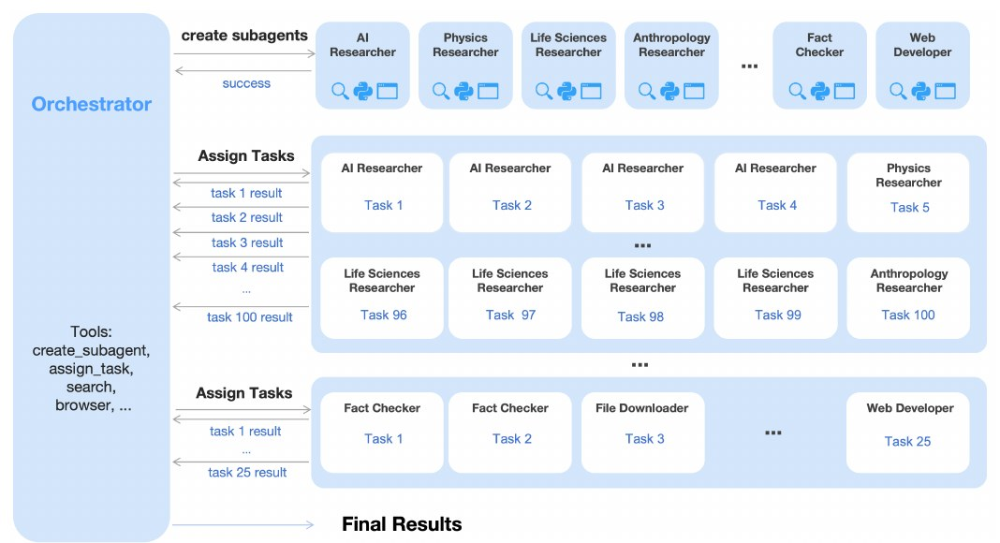
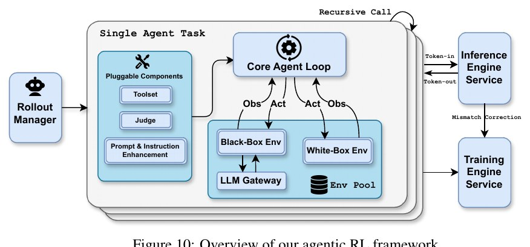
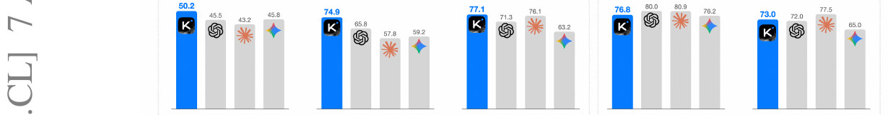

速览
版本说明：发布日期取 arXiv v1（2026-02-02）。本页核对的 PDF / 文本是 v2（2026-08-07），所有数字以 v2 为准；v1 与 v2 之间的改动本页没有逐条对比。
五句话看懂
视觉数据要早加、少加、一直加
固定图文 token 总预算做对照：训练一开始就以 10:90 混入视觉，6 项指标里有 5 项最好，比如视觉推理 43.8 vs 39.0、OCR 65.7 vs 61.5（对照组是训练进行到 80% 才以 50:50 加入）表 1。因此 K2.5 在整个训练过程中保持恒定的图文比例§2.1。
只用纯文本 SFT 也能激活视觉工具调用
Zero-vision SFT：所有图像操作都改写成 IPython 里的程序化操作，SFT 阶段不放任何视觉轨迹§2.2。作者称加入人工设计的视觉轨迹反而损害泛化，但没有给出对比数字。
视觉 RL 让文本分数也涨了
做完 outcome-based 视觉 RL 后测纯文本基准：MMLU-Pro 84.7 → 86.4，GPQA-Diamond 84.3 → 86.4，LongBench v2 56.7 → 58.9表 2。所以最终的 RL 按能力（知识 / 推理 / 代码 / Agent）分域，不按模态分§2.3。
Agent Swarm：只训编排者，学会并行
BrowseComp 60.6 → 78.4，WideSearch 72.7 → 79.0，内部 Swarm Bench 41.6 → 58.3表 6。奖励里有两个辅助项，分别防“退回串行”和“为了并行而并行”，训练中会退火到 0§3。
视觉强项在 OCR / 文档 / 视频，基线多为自测
OCRBench 92.3，OmniDocBench 1.5 88.8，LVBench 75.9；OSWorld-Verified 63.3，低于 Claude Opus 4.5 的 66.3表 4。很多基线分是 Kimi 自己复测的（带 *）；GPT-5.2 在视觉评测中约 10% 无输出，按答错计附录 E.2。
架构：MoonViT-3D + MLP projector + Kimi K2 MoE
三件套沿用 Kimi-VL 的设计原则§4.2。论文没有给模型结构总图（图 3 是 Agent Swarm 的系统图，放在下方），所以先用一张示意图把文字描述画出来。
MoonViT-3D：把 patch-n'-pack 推广到时间维 §4.2
最多 4 帧连续画面视为一个时空块，各帧的 2D patch 一起展平、打包进同一条 1D 序列，用同一套注意力同时处理空间和时间。作者认为多出来的时间注意力有助于理解高速运动和视觉特效，权重共享则让图像能力直接迁移到视频。不另设视频专用模块。
相对 Kimi-VL 的变化 §4.2 §4.3
- 视觉编码器从 2D MoonViT 升级为 3D，图像 / 视频共享嵌入空间
- ViT 续训去掉了对比损失，只保留 caption 交叉熵
- LLM 从 Moonlight 换成 1T 级的 Kimi K2；ViT 先和 Moonlight-16B-A3B 对齐，再只训 projector 接到 K2 上
相对 Kimi K2：多了什么 §1 §4.4
语言骨干结构不变，从 K2 接近训练结束的 checkpoint 继续训§4.3。新增的是视觉输入、thinking / instant 合一，以及推理时的 Agent Swarm 编排接口（create_subagent、assign_task）附录 E.8。
训练侧改动：Decoupled Encoder Process §4.5.1
视觉编码器很小，所以在每张卡上各复制一份，按图像数 / patch 数在全局 batch 内均衡做前向，只保留输出激活；然后跑骨干的前向和反向；最后重算视觉前向并做反向。这样 PP Stage-0 不再被多模态输入撑爆，K2 原有的纯文本并行策略可以直接复用，多模态训练效率达到纯文本的 90%。

create_subagent 动态生成领域子 Agent（AI / 物理 / 生命科学 / 人类学研究员、事实核查、网页开发等），再用 assign_task 分批并发派任务、收回结果、汇总。子 Agent 冻结，由固定的中间策略 checkpoint 实例化。图中“100 个任务”“25 个任务”只是示例。来源：论文图 3数据：类别讲得清楚，比例几乎都没给
数据描述分散在 §2.1、§4.3、§4.4 和附录 B / C。能拿到的是：每个阶段用了哪些类型的数据、多少 token，以及视觉数据的 7 个类别。拿不到的是：实际的图文比例、各类别占比、过滤阈值、SFT / RL 的样本数。下面不画任何占比条，只有一组配比实验的比例是原文直接给出的。
4.1 唯一给出比例的地方：图文配比对照实验
实验设置 §2.1 表 1
图文 token 总预算固定，同时改“视觉从什么时候加入”和“加入后的图文比例”。为了凑准比例，先训一段精确算好的纯文本 token，再引入视觉数据。
比例指视觉数据加入之后的混合比例，原文给出。总 token 预算、模型规模、6 个维度各由哪些基准组成，原文未披露。
结果 表 1 · 附录 B.1
| 维度 | Early | Mid | Late |
|---|---|---|---|
| 视觉知识 | 25.8 | 25.0 | 24.2 |
| 视觉推理 | 43.8 | 40.7 | 39.0 |
| OCR | 65.7 | 64.1 | 61.5 |
| 文本知识 | 45.5 | 43.9 | 43.1 |
| 文本推理 | 58.5 | 58.6 | 57.8 |
| 代码 | 24.8 | 24.0 | 24.0 |
● 为本页标出的每行最高分。正文说 Early “yields better results”，其实文本推理一项 Mid 高 0.1。附录 B.1 的观察：Mid / Late 刚加入视觉时，文本能力会先掉再回升（dip-and-recover），Early 没有这个现象。
注意：K2.5 正式训练用的是哪个恒定比例，原文未披露。另外，正式训练是从 K2 接近训练结束的 checkpoint 接着训的§4.3，并不是“从第 0 步就加入视觉”的设置，和表 1 里的 Early 不完全对应。
4.2 各阶段数据
| 阶段 | 数据类型（表 3 原文） | 序列长度 | Token | 训练对象 |
|---|---|---|---|---|
| ViT 训练 | Alt text、合成 caption、Grounding、OCR、视频 | 4096 | 1T | ViT |
| 联合预训练 | 上一阶段的数据，再加文本、知识、图文交错、视频、OS 截图 | 4096 | 15T | ViT + LLM |
| 长上下文 mid-training | 上一阶段的数据，再加高质量文本与多模态、长文本、长视频、推理、Long-CoT | 32768 → 262144 | 500B → 200B | ViT + LLM |
表 3 用 “+” 表示在上一阶段数据基础上追加。“500B → 200B”和“32768 → 262144”对应分步扩展上下文，原文没有说明每一步的 token 怎么分。
4.3 视觉预训练语料：7 类 + 3 项专门补充
来源：附录 B.2、B.3。原文对清洗只说了一句“全部数据经过严格过滤、去重与质量控制”，没有给方法、阈值或淘汰率。联合预训练阶段在 K2 的数据分布上做了三处调整：引入新的 unique token、提高代码相关内容的权重、限制每个数据源的最大 epoch 数§4.3。
4.4 Caption 与标注方式
4.5 后训练数据
视觉 RL 任务三域 §2.3
- Grounding 与计数：定位、数清物体
- 图表与文档理解：结构化视觉信息和文字提取
- Vision-critical STEM：筛选出必须依赖图像才能解的数理题
另外合成了复杂的视觉谜题，用 Kimi K2 当 LLM verifier 判分§4.4.2。
PARL 的合成 prompt §3
专门构造串行执行很难在固定步数和工具预算内完成的任务：wide search（同时探索大量独立信息源）、deep search（多条推理分支，最后再汇总），以及长文档分析、大规模文件下载这类贴近真实使用的任务。prompt 里不明说要并行，靠任务分布本身让并行策略更划算。
数据基础设施（附录 C.1）存储、增广、确定性
- 存储
- S3 兼容对象存储，视觉数据保留原始格式，不预先转码
- 灵活性
- 训练过程中动态 shuffle、混合、tokenize、loss mask、sequence packing，数据比例可以随时调整
- 增广
- 视觉和文本都做随机增广；几何变换时同步更新 2D 坐标和朝向元数据
- 确定性
- 管理随机种子和 worker 状态，中断恢复后的数据顺序和不中断时完全一致
- 平台
- 统一平台管理数据注册、可视化、统计分析、跨云同步和生命周期
已披露规模
| 项目 | 数量 | 来源 |
|---|---|---|
| Kimi K2 文本预训练（底座） | 15T 高质量文本 token | §4.1 |
| ViT 训练阶段 | 1T token（第一步“约 1T”） | 表 3 §4.3 |
| 联合预训练 | 15T 图文 token，序列长度 4K | 表 3 §4.3 |
| 长上下文 mid-training | 500B → 200B token | 表 3 |
| 三个阶段合计 | 约 16.7T 推算，正文却写“约 15T，跨三个阶段” | §4.3 表 3 |
| 配比实验的视觉比例 | 10% / 20% / 50% | 表 1 |
| K2.5 正式训练的图文比例 | 原文未披露 | — |
| 7 类视觉数据各自的量或占比、文本 4 个领域的占比 | 原文未披露 | — |
| 合成 caption 的上限、过滤阈值、去重方法 | 原文未披露 | — |
| SFT 样本数、RL prompt 数、PARL 合成 prompt 数 | 原文未披露 | — |
训练配方：三段预训练 + SFT + 联合 RL + PARL
预训练从 K2 的 checkpoint 接着训§4.3。后训练的 RL 算法同时用于文本-视觉联合 RL 和 PARL§4.4.2；两者谁先谁后、是否交替进行，原文没写。
ViT 训练
- 训练对象
- MoonViT-3D，之后只训 projector
- Token
- 1T
- 序列
- 4096
- 损失
- 仅 caption 交叉熵
- 对齐对象
- Moonlight-16B-A3B
联合预训练
- 训练对象
- ViT + LLM
- Token
- 15T
- 序列
- 4096
- 起点
- K2 接近训练结束的 checkpoint
- 图文比例
- 恒定（数值未披露）
长上下文 mid-training
- 训练对象
- ViT + LLM
- Token
- 500B → 200B
- 序列
- 32768 → 262144
- 方法
- YaRN 插值，分步扩展
- 数据
- 高质量数据 + 长文本 / 长视频 / Long-CoT
Zero-vision SFT
- 只用纯文本 SFT 数据
- 图像操作全部走 IPython
- 回复由 K2 / K2 Thinking / 内部专家模型生成
- 作者称“初步实验”中加入图文 SFT 明显更差§2.2
联合文本-视觉 RL
- 先做 outcome-based 视觉 RL（三域），再从中抽轨迹做 RFT
- 正式 RL 按能力分域（知识 / 推理 / 代码 / Agent…），每个域同时用纯文本和多模态 query
- GRM 不区分模态，跨模态轨迹统一打分§2.3
PARL（Agent Swarm）
- 只更新编排者；子 Agent 由固定的中间策略 checkpoint 实例化并冻结，它们的轨迹不进入优化目标
- 先用小子 Agent 训，再换成大模型
- 按“关键步数”而非总步数设预算
- 集群上可以动态调整子 Agent 和编排者的推理实例比例§3
策略优化：只按 log-ratio 截断的 token 级梯度屏蔽 §4.4.2 式 1
每题采样 K 条回复，优势取 r − r̄（同题回复的平均奖励）；另加 τ·(log-ratio)² 的平方正则；按 batch 内的总 token 数 N 归一化。log πθ/πold 落在 [α, β] 之外的 token 梯度直接置零，和优势的正负无关，这是与 PPO clip 的区别。目的是压住训练框架与推理框架不一致带来的 off-policy 偏移。优化器仍用 MuonClip。
α、β、τ、K 的取值原文未给。
奖励设计 §4.4.2
- 可验证任务：规则化的 outcome 奖励，另加 budget-control 奖励
- Grounding：用 IoU 做软匹配，按 F1 给奖励
- 点定位：最优匹配后用高斯加权距离做软匹配，按 F1 给奖励
- 多边形分割：把预测多边形栅格化成 mask，与 GT 算 IoU
- OCR：归一化编辑距离
- 计数：预测与 GT 的绝对差
- 视觉谜题：Kimi K2 当 verifier
- 开放任务：GRM，按任务配多套 rubric，防 reward hacking
PARL 奖励 §3
rPARL = λ1·rparallel + λ2·rfinish + rperf
- rparallel：奖励创建子 Agent，防止串行坍缩（编排者退回单 Agent 执行）
- rfinish：奖励子任务真正完成，防止虚假并行（大量创建子 Agent 却不做有意义的拆分）
- λ1、λ2 训练中退火到 0；初值未给
关键步数（Critical Steps）§3
按计算图里的关键路径来定义：每个阶段的耗时 = 主 Agent 步数 + 该阶段并行组里最长那个子 Agent 的步数，全部阶段累加。拆得多但最长分支没变短，就拿不到好处。附录 E.8 的步数上限：BrowseComp 编排者 15 步、每个子 Agent 100 步；WideSearch 都是 100 步；内部 Bench 编排者 100 步、每个子 Agent 50 步。
Toggle：在“限预算”和“放开推理”之间交替 §4.4.2 式 2 · 图 5
每 m 轮切换一次：Phase0 只在某题平均正确率高于 λ 时才强制 token 预算；Phase1 放开到最大长度。每题的预算取这道题答对回复长度的 ρ 分位数，训练开始时估一次，之后不变。在 K2 Thinking 上验证：输出 token 平均减少 25–30%，性能影响可以忽略；只在数学和代码上训练，GPQA 和 MMLU-Pro 的 token 也会减少§4.4.2。m、λ、ρ 未给。
推理 token 用量对比（表 5）括号内为平均输出 token
| 基准 | Kimi K2.5 | Kimi K2 Thinking | Gemini-3.0 Pro | DeepSeek-V3.2 Thinking |
|---|---|---|---|---|
| AIME 2025 | 96.1 (25k) | 94.5 (30k) | 95.0 (15k) | 93.1 (16k) |
| HMMT Feb 2025 | 95.4 (27k) | 89.4 (35k) | 97.3 (16k) | 92.5 (19k) |
| HMMT Nov 2025 | 91.1 (24k) | 89.2 (32k) | 94.5 (15k) | 90.2 (18k) |
| IMO-AnswerBench | 81.8 (36k) | 78.6 (37k) | 83.1 (18k) | 78.3 (27k) |
| LiveCodeBench | 85.0 (18k) | 82.6 (25k) | 87.4 (13k) | 83.3 (16k) |
| GPQA Diamond | 87.6 (14k) | 84.5 (13k) | 91.9 (8k) | 82.4 (7k) |
| HLE-Text | 31.5 (24k) | 23.9 (29k) | 38.4 (13k) | 25.1 (21k) |
K2.5 比 K2 Thinking 用的 token 少，但仍明显多于 Gemini-3.0 Pro 和 DeepSeek-V3.2。

训练集群与并行配置（附录 C）H800 · PP16 · EP16
- 硬件
- NVIDIA H800 集群，节点间 8×400 Gbps RoCE
- 并行
- 16 路 PP（带 virtual stage）+ 16 路 EP + ZeRO-1 DP；节点数是 32 的倍数即可
- 通信
- EP all-to-all 在 interleaved 1F1B 调度下与计算重叠
- 显存
- 对 LayerNorm、SwiGLU、MLA up-projection 做选择性重算；不敏感的激活压缩到 FP8-E4M3；其余激活卸载到 CPU，与计算重叠
- 未披露
- GPU 数量、训练时长、学习率、batch size、RL 步数
评测：视觉 / 视频 / Agent 都强，基线大量自测
对比对象：Claude Opus 4.5（extended thinking）、GPT-5.2（xhigh）、Gemini 3 Pro（high thinking）；开源模型方面，文本基准对比 DeepSeek-V3.2（thinking），视觉基准对比 Qwen3-VL-235B-A22B-Thinking§5.1.1 附录 E.2。K2.5 统一用 temperature 1.0、top-p 0.95、256k 上下文。
横轴都从 0 开始，满分 100。数值旁的 * 沿用原表的复测记号。WideSearch 里 Claude 的 76.2 在表 4 中带 *，表 6 没标。
精选：视觉 / 视频 / 电脑操作
| 基准 | Kimi K2.5 | Claude Opus 4.5 | GPT-5.2 (xhigh) | Gemini 3 Pro | Qwen3-VL-235B-A22B |
|---|---|---|---|---|---|
| 图像 · 推理与知识 | |||||
| MMMU-Pro | 78.5 | 74.0 | 79.5* | 81.0 | 69.3 |
| MathVision | 84.2 | 77.1* | 83.0 | 86.1* | 74.6 |
| CharXiv (RQ) | 77.5 | 67.2* | 82.1 | 81.4 | 66.1 |
| WorldVQA | 46.3 | 36.8 | 28.0 | 47.4 | 23.5 |
| BabyVision | 36.5 | 14.2 | 34.4 | 49.7 | 22.2 |
| 图像 · 感知与 OCR / 文档 | |||||
| BLINK | 78.9 | 68.8* | — | 78.7* | 68.9 |
| MMVP | 87.0 | 80.0* | 83.0* | 90.0* | 84.3 |
| OCRBench | 92.3 | 86.5* | 80.7* | 90.3* | 87.5 |
| OmniDocBench 1.5 | 88.8 | 87.7* | 85.7 | 88.5 | 82.0* |
| InfoVQA (test) | 92.6 | 76.9* | 84* | 57.2* | 89.5 |
| 视频 | |||||
| VideoMMMU | 86.6 | 84.4* | 85.9 | 87.6 | 80.0 |
| MotionBench | 70.4 | 60.3* | 64.8* | 70.3 | — |
| Video-MME | 87.4 | 77.6* | 86.0* | 88.4* | 79.0 |
| LongVideoBench | 79.8 | 67.2* | 76.5* | 77.7* | 65.6* |
| LVBench | 75.9 | 57.3 | — | 73.5* | 63.6 |
| 电脑操作 | |||||
| OSWorld-Verified | 63.3 | 66.3 | 8.6* | 20.7* | 38.1 |
| WebArena | 58.9 | 63.4* | — | — | 26.4* |
来源：表 4。“—”表示原表未报。原文对 OSWorld 的补充说明：K2.5 只靠 GUI 动作、不调外部工具；Operator（o3）为 42.9，WebArena 上 Operator 为 58.1§5.1.2。
精选：Agent / 推理 / 代码
| 基准 | Kimi K2.5 | Claude Opus 4.5 | GPT-5.2 (xhigh) | Gemini 3 Pro | DeepSeek-V3.2 |
|---|---|---|---|---|---|
| HLE-Full / w/ tools | 30.1 / 50.2 | 30.8 / 43.2 | 34.5 / 45.5 | 37.5 / 45.8 | 25.1† / 40.8† |
| AIME 2025 | 96.1 | 92.8 | 100 | 95.0 | 93.1 |
| GPQA-Diamond | 87.6 | 87.0 | 92.4 | 91.9 | 82.4 |
| BrowseComp / w/ ctx manage | 60.6 / 74.9 | 37.0 / 57.8 | 65.8（跨两行） | 37.8 / 59.2 | 51.4 / 67.6 |
| WideSearch（item-F1） | 72.7 | 76.2* | — | 57.0 | 32.5* |
| DeepSearchQA | 77.1 | 76.1* | 71.3* | 63.2* | 60.9* |
| SWE-Bench Verified | 76.8 | 80.9 | 80.0 | 76.2 | 73.1 |
| Terminal Bench 2.0 | 50.8 | 59.3 | 54.0 | 54.2 | 46.4 |
| LiveCodeBench (v6) | 85.0 | 82.2* | — | 87.4* | 83.3 |
| GDPVal-AA | 41.0 | 45.0 | 48.0 | 35.0 | 34.0 |
来源：表 4。HLE 分子集：无工具时文本 31.5、图像 21.3；带工具时文本 51.8、图像 39.8§5.1.2。GDPVal-AA 引用 Artificial Analysis 截至 2026-01-28 的榜单附录 E.9。

评测协议细节（附录 E）采样次数、帧数、上下文管理
- 推理题
- 最大生成 96k token；AIME / HMMT Avg@64，GPQA Avg@8
- LongBench v2
- 输入统一截到约 128k；GPT-5.2 改用 high 档，因为 xhigh 常不按选择题格式作答
- 图像 / 视频
- 最大 64k token，Avg@3；ZeroBench（带工具）每步最多 24k、最多 30 步
- 视频采样
- 短视频（VideoMMMU / MMVU / MotionBench）均匀抽 128 帧，最大边 896；长视频（Video-MME / LongVideoBench / LVBench）均匀抽 2048 帧，分辨率 448
- OmniDocBench
- (1 − 归一化 Levenshtein 距离) × 100
- 代码
- Avg@5；SWE-Bench 用内部框架，工具只有 bash / create_file / insert / view / str_replace / submit，非 thinking 模式；Terminal Bench 也用非 thinking 模式
- Agent 搜索
- 工具为搜索、代码解释器、浏览器；默认不做上下文管理，超出上下文直接算失败；HLE 带工具时用 Hide-Tool-Result，BrowseComp 另报 discard-all 结果；Seal-0 / WideSearch Avg@4，其余单次
- 电脑操作
- 每回合最多 100 步；OSWorld 温度 0，WebArena 温度 0.1；单次运行；上下文里放最近 3 张截图、完整思考历史和任务指令（沿用 OpenCUA 配置）；WebArena 手工修了评测脚本，fuzzy_match 用 GPT-4o 判；Claude Opus 4.5 只给 computer-use 工具，不给浏览器工具，和其 System Card 的配置不同
- GPT-5.2 失败
- 视觉评测约 10% 无输出（重试 3 次），按答错计；API 不稳定，WideSearch 等高成本基准跳过
Agent Swarm 的延迟曲线 §5.2 图 8
WideSearch 上，目标 Item-F1 从 30% 提高到 70% 时，单 Agent 所需执行时间从基线的约 1.8× 涨到 7.0× 以上；Agent Swarm 基本稳定在 0.6×–1.6×。图中标出的节省倍数依次为 ×3.0、×3.0、×3.2、×3.7、×4.5。摘要里“最多 4.5×”取的就是最右端那个点。
Swarm 也是一种上下文管理 §5.2 图 7
子 Agent 各自维护有界的局部上下文，只把和任务相关的结果交回编排者，作者称之为 context sharding（按任务分片上下文），而不是事后截断。图 7 显示在 BrowseComp 上它比 Discard-all 准确率更高、关键步数更少（图未裁入本页，具体数值见原文）。
新在哪
固定 token 预算下，比较视觉“何时加、加多少”
反驳“后期大比例灌视觉 token”的常见做法：早加、低比例在 6 项中的 5 项上更好，并观察到晚加时文本能力会先掉再回升表 1 附录 B.1。
可核对，但只有一组三点对照；模型规模和预算没公开。
Zero-vision SFT
冷启动阶段完全不用视觉 SFT 数据，靠纯文本 SFT 加 IPython 图像操作来激活视觉工具调用，再交给视觉 RL 扩展能力（图 2 的四条 RL 曲线都从这里起步）§2.2 图 2。
和图文 SFT 的对比只停留在一句“初步实验”，没有数字。
视觉 RL 带动文本，RL 按能力而不是按模态分域
表 2 的三项文本基准在视觉 RL 后上涨 1.7–2.2 分；最终 RL 中每个能力域都混用纯文本和多模态 query，GRM 也不区分模态表 2 §2.3。
涨幅是同一模型训练前后的对比，没有“继续做文本 RL 同样步数”的对照。
PARL：只训编排者，子 Agent 冻结
以此避开端到端联合优化里的信用分配和训练稳定性问题；奖励加入 rparallel 和 rfinish 并退火；用“关键步数”约束预算；构造串行做不完的 prompt§3。
三个设计各自有动机描述，但都没有单独去掉某一项的消融。
MoonViT-3D + Decoupled Encoder Process
图像和视频共用同一编码器，把最多 4 帧打包成时空块再做 4× 时间池化§4.2；训练侧把视觉编码器从流水线里拆出来做全局负载均衡，多模态训练效率达到纯文本的 90%§4.5.1。
作者自己也提到，LongCat-Flash-Omni 的设计思路与 DEP 相近。
对图像编辑数据、评测与 caption 的启示
K2.5 不是编辑模型，但它的 caption 目标设计、视觉奖励拆分、“必须看图”的过滤、图像-代码对和评测协议都能借过来。每条先写论文的做法（带出处），下面的高亮框都是迁移建议，不是论文内容。
C1一个模型，多种文本目标
论文：ViT 续训时，文本目标同时包括 alt text、合成 caption、grounding bbox、OCR 文本，只用 caption 交叉熵，去掉了对比损失§4.3。
迁移建议，不是论文内容：训练编辑用的 diff-captioner 或指令反推模型时，在同一格式里同时输出“改了什么（自然语言）+ 改动区域 bbox + 改动前后的文字（OCR）”，后两项可以直接当作程序可校验的弱监督。
C2给合成 caption 设上限
论文：预训练 caption 数据严格限制合成 caption 的比例，以减少幻觉附录 B.3；上限多少没公开。
迁移建议，不是论文内容：编辑指令如果全部由 VLM 从图对反推，容易出现“说改了但其实没改”的幻觉。保留一部分人写或规则生成的指令作为锚点，按来源（人写 / 规则 / VLM）分桶记账，评测时也按来源分开报分。
C3图像-代码对：改代码，而不是改像素
论文：预训练加入大量 HTML / React / SVG 代码与渲染截图的配对，用来对齐结构逻辑和视觉几何附录 B.3。
迁移建议，不是论文内容：海报、UI、图表、文字排版这类编辑，可以先改代码再渲染出前后两张图；没改的区域逐像素一致，code diff 本身就是精确的编辑 caption。
D1筛掉不看图也能做对的题
论文：视觉 RL 的 STEM 题经过筛选，必须依赖视觉输入才能解§2.3。
迁移建议，不是论文内容：对编辑评测集和推理型编辑指令做一遍“盲测”：只给文本指令、不给原图，让 VLM 预测编辑结果；能预测出来的样本说明主要考的是文本常识，应该降权或单独分组。
D2几何增广要同步更新坐标
论文：数据加载时做随机增广，几何变换要保持 2D 坐标和朝向元数据正确附录 C.1。
迁移建议，不是论文内容：编辑图对的裁剪、翻转、缩放必须让原图、目标图、mask、bbox 共用同一组随机参数；在 dataloader 里加断言，检查变换后 mask 和像素差异区域的 IoU 不掉。
D3早混、少混、一直混
论文：固定总预算时，10:90 从一开始就混入，优于 50:50 后期集中加入；晚加入时会出现文本能力先掉再回升表 1 附录 B.1。
迁移建议，不是论文内容：往通用生成或理解模型里加编辑数据时，可以做同类对照（编辑数据 10% 全程混入 vs 末期 50% 集中加入），同时盯住 T2I 指标有没有“先掉再回升”。这条结论来自理解任务，能不能迁移到生成任务需要自己验证。
E1按子任务选最贴合的可验证指标
论文：grounding 用 IoU 软匹配 F1，点定位用高斯距离加最优匹配，分割用多边形栅格化后算 mask IoU，OCR 用归一化编辑距离，计数用绝对差§4.4.2。
迁移建议，不是论文内容：把编辑指令拆成可程序校验的子项：改文字的用目标区域 OCR 的 NED；增删物体的用检测计数差；移动或缩放的用 bbox IoU；保持区域用 mask 外的像素或感知距离。最后再交给 VLM 评整体，不要只用一个 VLM 总分。
E2多套 rubric 的 GRM，防止 reward hacking
论文：GRM 按任务场景使用多套 rubric，以缓解 reward hacking 和对单一偏好信号的过拟合；评价维度包括生成物的审美质量和严格的指令遵循§4.4.2。
迁移建议，不是论文内容：编辑 RL 的 VLM 奖励至少准备两套措辞和维度划分不同的 rubric，训练时轮换或取最小值；定期抽样检查高分样本，看是否出现“改动很小却拿高一致性分”的漏洞。
E3失败算错，自测要标出来
论文：没有公开分数的基线由自己复测并标 *；GPT-5.2 约 10% 无输出按答错计；视觉基准报 Avg@3，搜索类 Avg@4§5.1.1 附录 E。
迁移建议，不是论文内容：评闭源编辑 API 时，把拒绝 / 超时 / 安全拦截单独统计成一列，再分别给出“按失败计”和“剔除失败”两套分数；每个模型至少跑 3 个 seed，报均值和波动；复测的和引用的分数在表里用不同记号。
局限与存疑
- 数据配比基本没公开。正式训练的恒定图文比例、7 类视觉数据和 4 个文本领域的占比、合成 caption 的上限、过滤阈值都没给；表 1 的对照实验也没写模型规模、token 预算和每个维度的基准构成。
- 关键做法缺消融。Zero-vision SFT 和图文 SFT 的对比只有一句“初步实验”，没有数字；PARL 的 rparallel / rfinish、冻结子 Agent、关键步数都没有单独消融；表 2 没有“同样步数的文本 RL”作对照。
- 基线可比性有限。表 4 大量基线分带 *（Kimi 复测）；GPT-5.2 视觉评测约 10% 无输出按答错计；OSWorld 上 GPT-5.2 8.6* 和 Gemini 20.7* 都是复测，Claude 的工具配置也和其官方 System Card 不同；LongBench v2 用的是 GPT-5.2-high 而不是 xhigh附录 E.2 E.7。
- token 总量的说法前后不一。§2 说在约 15T 图文 token 上联合预训练，§4.3 说“约 15T，跨三个阶段”，但把表 3 三个阶段的 1T、15T、500B、200B 加起来约 16.7T推算。
- 单 Agent WideSearch 分数不一致。引言写 Item-F1 从 72.8% 提到 79.0%，表 4 和表 6 的单 Agent 都是 72.7§1 表 6。
- “延迟最多降 4.5×”只是一个点。它是 WideSearch 上目标 F1 = 70% 时的节省倍数，其余点在 3.0×–3.7×图 8；BrowseComp 和内部 Bench 没有给时间数据。
- BrowseComp 的 GPT-5.2 分数归属不清。表 4 中 65.8 跨“无上下文管理”和“有上下文管理”两行；图 1 把它和 K2.5 的 74.9（有上下文管理）放在一起比较表 4 图 1。
- 内部基准无法复现。In-house Swarm Bench（WildSearch、Batch Download、WideRead、Long-Form Writing）没有公开；WebArena 的评测脚本经过手工修正，fuzzy_match 用 GPT-4o 判§5.2 附录 E.7。
- Toggle 不是在 K2.5 上验证的。25–30% 的 token 节省是在 K2 Thinking 上测得的§4.4.2 图 5；表 5 显示 K2.5 的输出长度仍是 Gemini-3.0 Pro 的约 1.4–2.0 倍推算。
- 超参基本没给。RL 的 α / β / τ、PARL 的 λ1 / λ2、Toggle 的 m / λ / ρ、学习率、batch、GPU 数量都没有公开。
图表索引
| 编号 | 内容 | 本页位置 |
|---|---|---|
| 图 1 | 主结果柱状图（本页为裁图，无基准名） | 评测 |
| 图 2 | 从 zero-vision SFT 起步的视觉 RL 曲线（MMMU-Pro / MathVision / CharXiv / OCRBench） | 未收录 · 原文第 4 页 |
| 图 3 | Agent Swarm：可训练编排者 + 动态创建的冻结子 Agent | 架构 |
| 图 4 | PARL 训练中准确率与并行度一起上升 | 未收录 · 第 6 页 |
| 图 5 | Toggle 前后 K2 Thinking 的性能与 token 用量 | 未收录 · 第 10 页 |
| 图 6 / 7 | 子 Agent 词云；Agent Swarm 与 Discard-all 在 BrowseComp 上的对比 | 未收录 · 第 14 页 |
| 图 8 | WideSearch 达到目标 Item-F1 所需的执行时间 | 评测（文字转述） |
| 图 9 | 三种图文比例的完整学习曲线 | 未收录 · 第 22 页 |
| 图 10 | Agentic RL 框架 | 训练配方 |
| 图 11 / 12 | 定性示例：32 段《黑神话：悟空》视频的并行分析；迷宫 / 饼图 / 找不同的工具化视觉推理 | 未收录 · 第 29–30 页 |
| 表 1 | 视觉注入时机与比例的对照实验 | 数据 |
| 表 2 | 视觉 RL 前后的文本基准 | TL;DR |
| 表 3 | 训练阶段：数据、token、序列长度、训练对象 | 数据 · 训练 |
| 表 4 | 与闭源和开源模型的全面对比 | 评测 |
| 表 5 | 推理模型的分数与 token 用量 | 训练配方 |
| 表 6 | Agent Swarm 与单 Agent、闭源基线的对比 | 评测 |